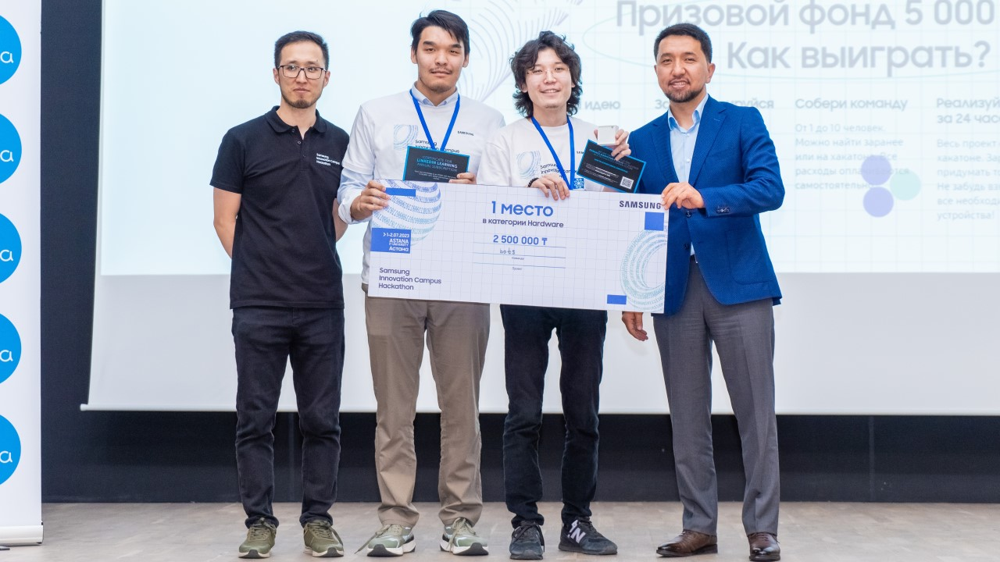
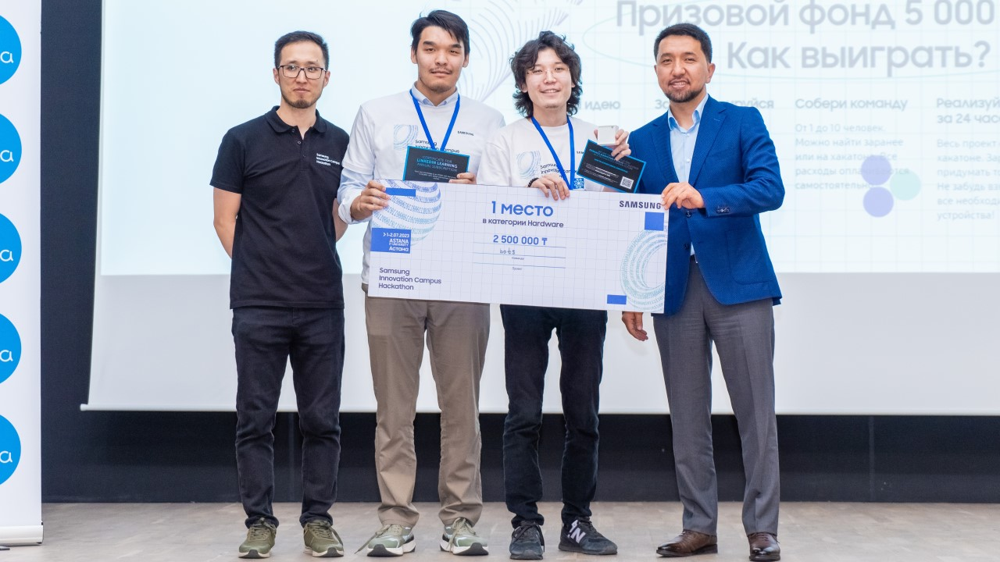

01 : About me
Introduction:
Greetings! I am Sultan Sovetov, a dedicated student currently pursuing a degree in Big Data Analysis at Astana IT University, Kazakhstan. From an early age, I have been captivated by the transformative power of information technology (IT) and its ability to solve real-world problems, sparking my unwavering passion for this field.
Throughout my academic journey, I have actively engaged in various IT projects, competitions, and events, exploring the realms of innovation and creativity. My journey led me to discover a strong interest in the visual aspects of IT, where I delved into website development, video production, and fostering creativity.
Data Science and My Vision:
Conscious of my future aspirations, I deliberately chose to specialize in Data Science, focusing particularly on Artificial Intelligence (AI) and Machine Learning (ML). The potential of AI and ML to address global challenges and enhance lives deeply inspires me. To channel this passion into tangible impact, I am currently leading a groundbreaking project in the EdTech sphere, an AI-powered educational assistant named TARS. The primary goal of TARS is to automate standard educational processes, ensuring a sensitive and comfortable learning environment for students. Through optimization of the learning experience on online platforms, our project provides valuable tools for both educators and learners, fostering personalized and efficient learning.
Dedication to Impactful Innovation:
Recently, my efforts with the TARS project were recognized at the Samsung Innovation Campus Hackathon, further fueling my determination to explore new horizons and continue making a positive difference through innovative solutions. I am wholeheartedly committed to pushing the boundaries of what technology can achieve to improve lives and solve complex challenges. The intersection of creativity and technology is where I find my true passion, constantly seeking ways to leverage my skills and expertise to contribute to a brighter future. As I continue my journey in the world of IT and Data Science, I eagerly embrace opportunities to collaborate with like-minded individuals and organizations. My dedication, technical proficiency, and creative mindset are the pillars on which I stand, ready to seize new challenges and contribute meaningfully to the ever-evolving landscape of technology.
 
